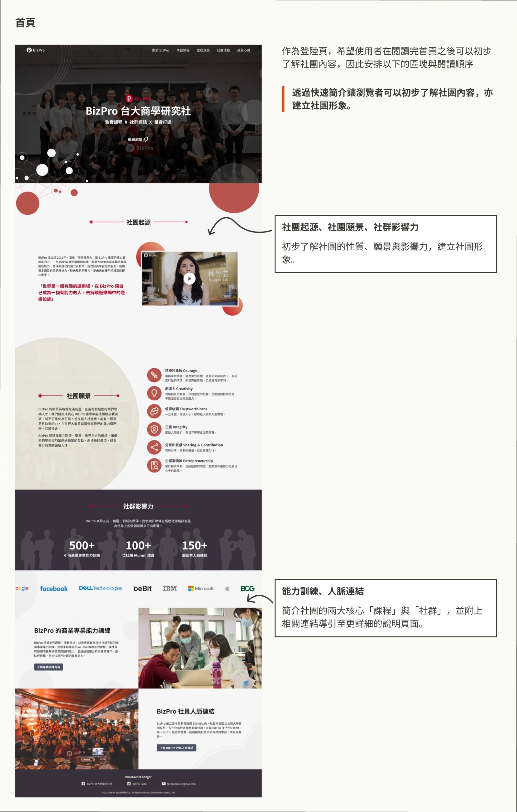
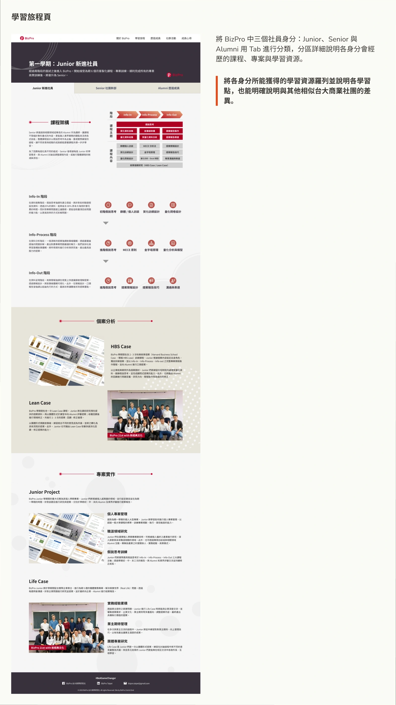
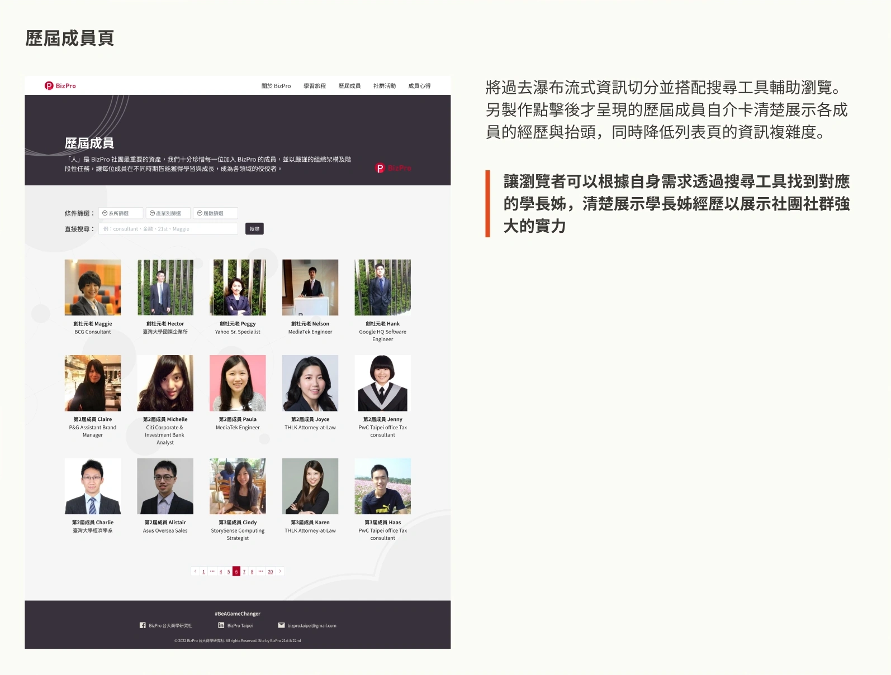
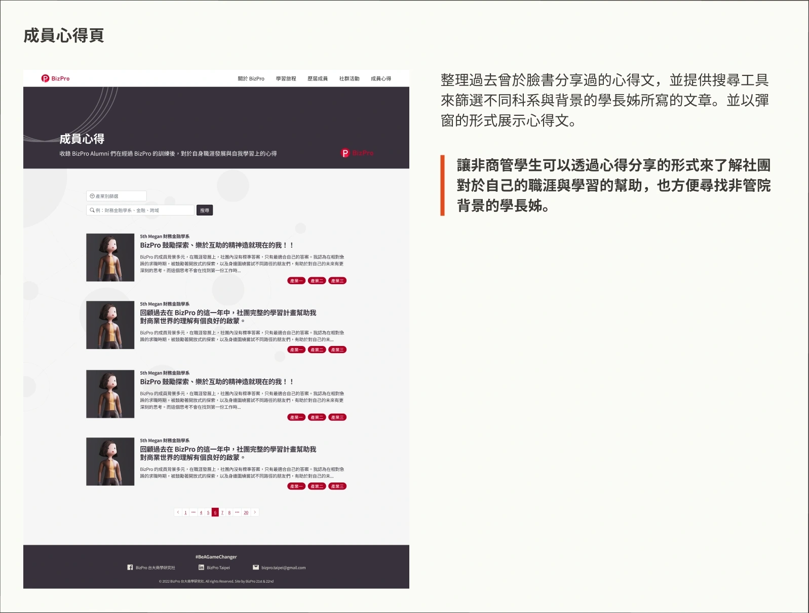
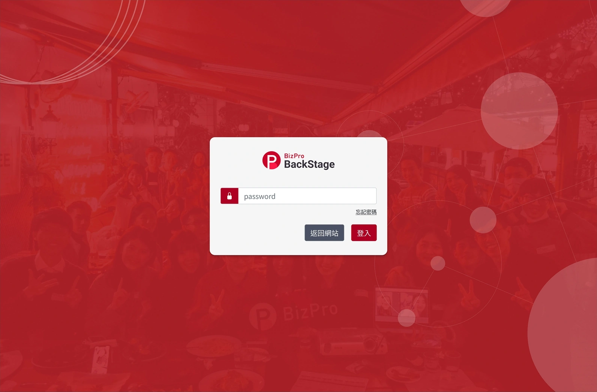
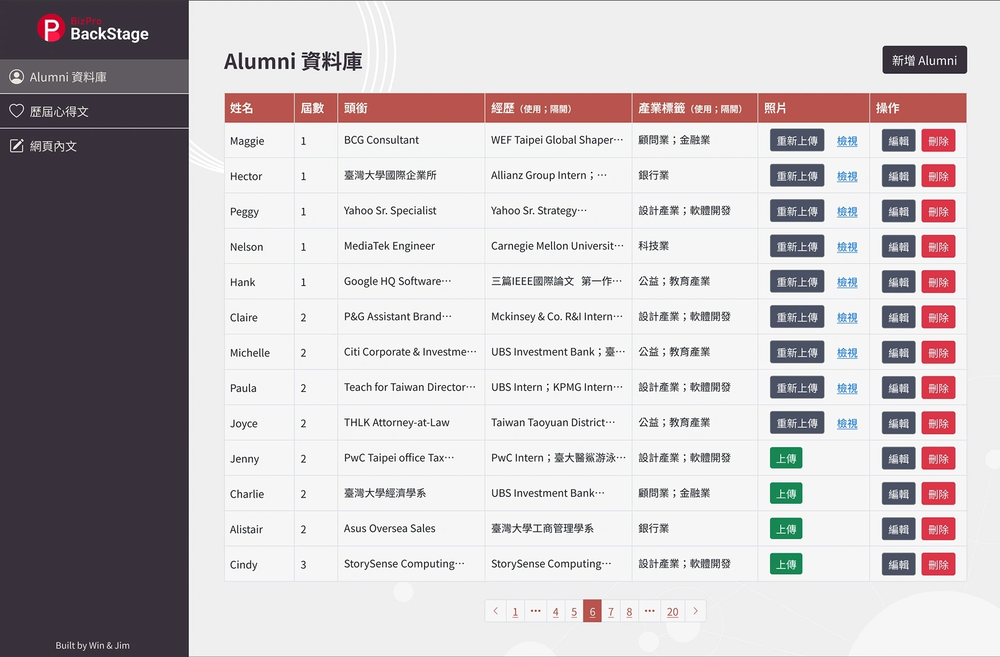

BizPro Official Website - 社團官方網站前後臺開發
專案背景
本專案是為 BizPro 台大商學研究社進行的網站重設計，為我擔任幹部期間的個人專案。由於網站自 2014 年建立後，隨著社團成長與課程調整，內容已不符合現況，一頁式設計也使歷屆人員列表過長，影響閱讀體驗。此外隨著台大其他商業社團的崛起，突顯社團價值與課程差異也變得更加重要。
視覺設計
符號：強調社群連結意象
BizPro 是一個以「社群連結」作為主要優勢的社團，因此以相互連接的圓點作為成員相互連結的意象，並以此延伸出重疊圓環、點狀紋理... 等其他樣式。
用色上以 BizPro logo 所採用的紅色作為主色調，搭配灰色與白作為占比最大的色系做視覺的呈現。


成果展示
根據兩類使用者對資訊的需求，我建立了四項主軸進行網站內容與架構發想：
- 我們如何能凸顯歷屆社員背景強大的優勢？
- 我們如何能凸顯新進社員人均資源集中的優勢？
- 我們如何能讓學生如親身經歷一般了解在社團內能獲得的效益？
- 我們如何能凸顯以人的互動為核心的形象？
前臺設計




後臺設計
本網站每學期皆需要更新歷屆成員資料與心得內容，因此開發用於更新資料的後台以利幹部交接。


設計系統架構規劃與整理